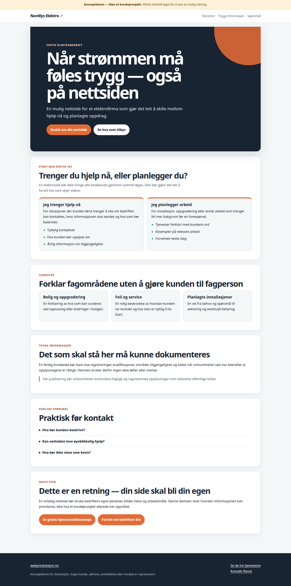
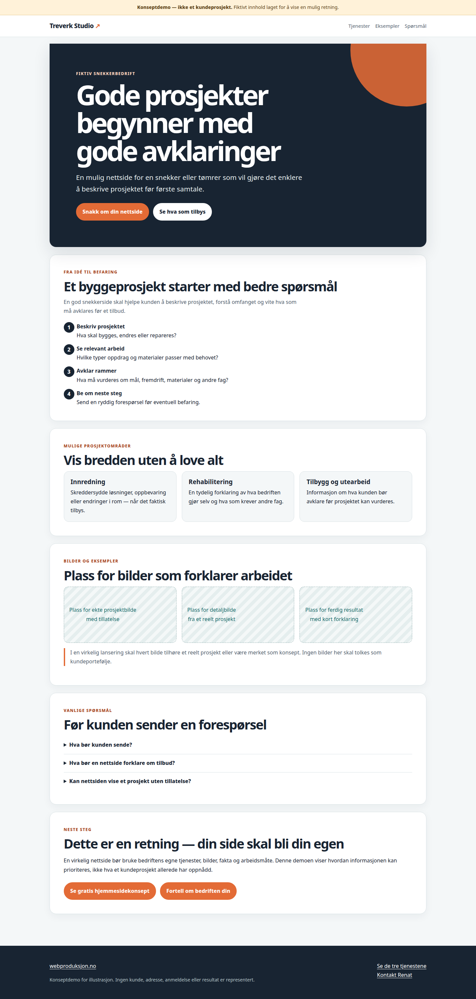
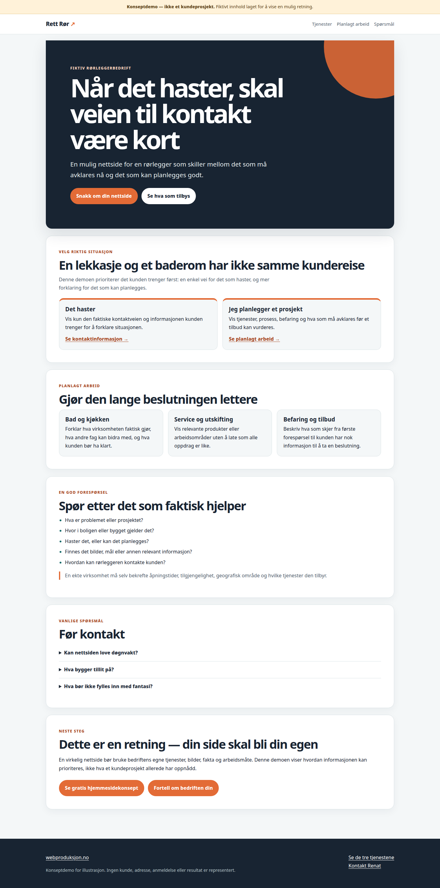

Landingsside
Én fokusert side for ett tilbud, en tjeneste eller et arrangement.
Jeg lager profesjonelle, enkle nettsider for små bedrifter over hele Norge — uten et stort og komplisert system.
Når noen hører om bedriften din, skal nettsiden gjøre tre ting enkelt: forklare hva du tilbyr, vise hvem du hjelper og gjøre det lett å ta neste kontakt. Jeg bygger små nettsider med nettopp dette som utgangspunkt.
Én fokusert side for ett tilbud, en tjeneste eller et arrangement.
Et lite nettsted som presenterer bedriften, tjenestene og kontaktinformasjonen.
En fleksibel start med flere sider og en struktur som kan bygges ut når behovet er reelt.
Velg riktig startpunkt
Velg en landingsside når én tjeneste eller ett mål skal stå i sentrum.
Velg en enkel nettside når en ny eller liten bedrift trenger de viktigste sidene.
Velg en nettside for små bedrifter når du trenger flere sider som kan bygges ut med et reelt formål.
Usikker på hva som passer? Sammenlign de tre alternativene eller fortell hva du trenger.
Konseptdemoer — ikke kundeprosjekter
Disse fiktive eksemplene viser hvordan en nettside kan prioritere ulike kundereiser. De er ikke portefølje, kunderesultater eller publiserte bedrifter.



Se alle konseptdemoene eller be om et konsept for din bedrift.
Du vet hvilke sider som skal lages, hva du må bidra med, og hva som eventuelt ligger utenfor prosjektet.
Jeg lover ikke rangeringer eller kunder. Du får en nettside som er bygget for mennesker først og som kan videreutvikles.
Vi starter med det bedriften trenger nå, slik at du ikke betaler for et stort system du ikke kommer til å bruke.
En god nettside gjør det mulig for folk å finne grunnleggende informasjon om bedriften din og ta deg seriøst når de vurderer hvem de skal kontakte. Jeg lover ikke topplasseringer, trafikk eller et bestemt antall kunder. Jeg lager et solid utgangspunkt som er forståelig, tilgjengelig og mulig å bygge videre på.
Du kan be om et tydelig merket hjemmesidekonsept før du bestemmer deg for et større prosjekt.
Nei. Disse tre tilbudene bygges som statiske HTML-filer. Det passer når du ønsker en rask og flyttbar nettside uten et stort redaktørsystem.
Ja, når en ny side svarer på et eget kundespørsmål eller har et tydelig formål. Det er bedre å bygge ut etter behov enn å starte med mange tomme sider.
Nei. Den kan gjøre bedriften tydeligere og enklere å kontakte, men jeg lover ikke rangeringer, trafikk eller et bestemt antall kunder.